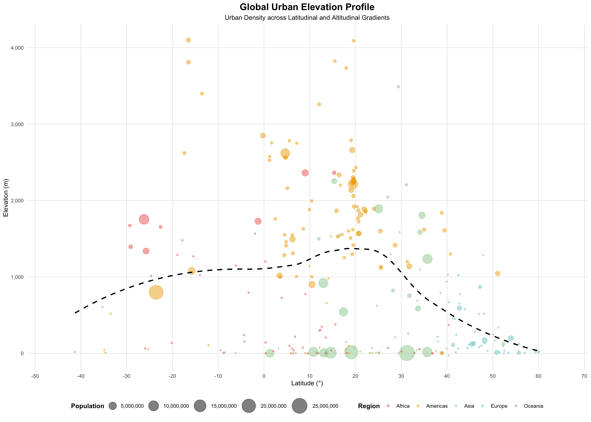
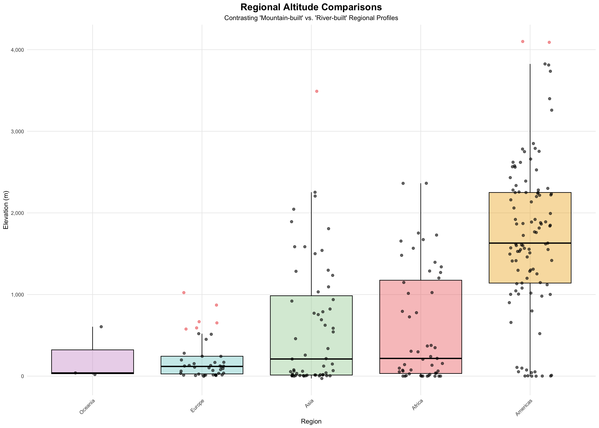
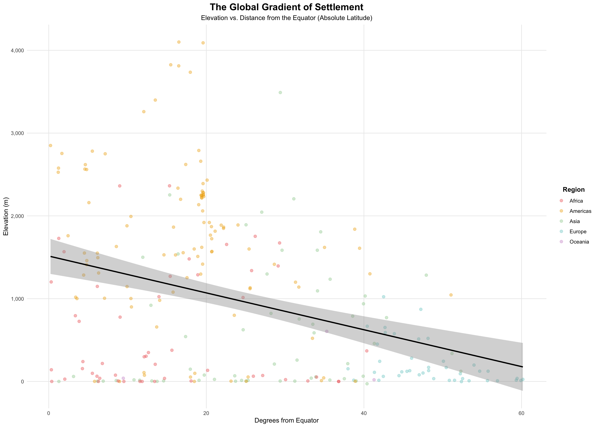
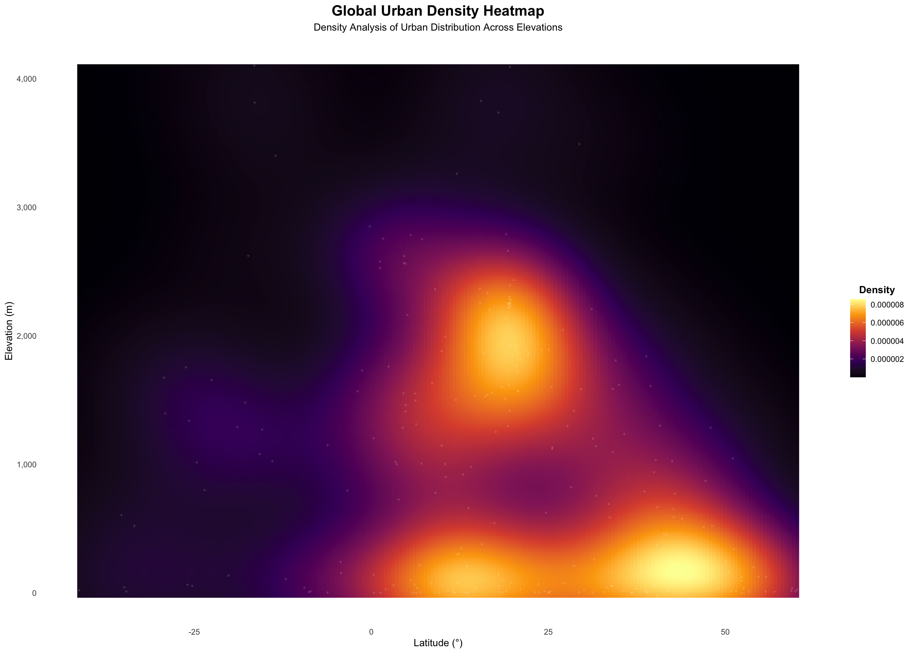
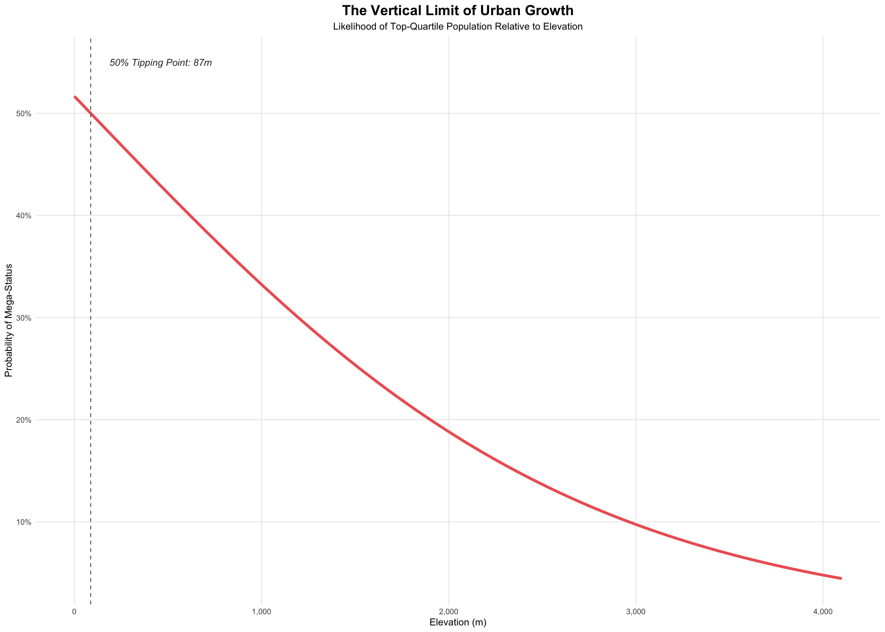

Cities are complex systems shaped by both human and environmental forces. While economic activity, trade networks, and political history often dominate discussions of urban development, physical geography plays an equally fundamental role. Elevation, in particular, influences climate, accessibility, infrastructure, and long-term habitability. From low-lying coastal capitals to high-altitude mountain settlements, cities occupy a wide vertical range that reflects both natural constraints and human adaptation.
The global distribution of cities by elevation reveals how populations balance these constraints. Low elevations offer access to waterways, trade routes, and fertile land, while higher elevations can provide strategic or climatic advantages, particularly in tropical regions. This project analyzes a dataset of cities around the world to examine how elevation varies across latitude, region, and population size, and to identify broader patterns in the vertical structure of human settlement.
# Load all required packages quietly
suppressMessages({
library(tidyverse)
library(rvest)
library(scales)
})The dataset for this analysis is compiled from tables on Wikipedia’s “List of cities by elevation” page, which aggregates geographic and demographic information for cities across multiple continents. Because the page presents data in several separate tables rather than a single unified structure, the scraper retrieves all tables with the same formatting and combines them into a single dataset. This approach ensures consistent coverage while preserving the original structure of the source.
The raw tables contain inconsistencies typical of scraped web data, including mixed formatting in numeric fields, embedded symbols, and variations in coordinate notation. Elevation and population values are stored as text with commas and additional characters, while latitude and longitude are expressed using directional indicators (N, S, E, W). To produce a clean dataset, numeric values are extracted using regular expressions, commas are removed, and coordinate directions are converted into signed decimal values. Regions are also standardized by grouping related subregions into broader continental categories.
# ---- 1. Scrape all tables ----
url <- "https://en.wikipedia.org/wiki/List_of_cities_by_elevation"
page <- read_html(url)
all_tables <- page %>%
html_elements("table.wikitable") %>%
html_table(fill = TRUE)
# ---- 2. Bind tables together and clean ----
cities_df <- bind_rows(all_tables) %>%
set_names(c("country", "city", "region", "latitude", "longitude", "population", "elevation")) %>%
mutate(
# Clean up region naming inconsistency and whitespace
region = str_trim(region),
region = case_when(
region %in% c("South America", "Central America", "North America") ~ "Americas",
TRUE ~ region
),
# Remove commas first, then extract the first number sequence
elevation = as.numeric(str_extract(str_remove_all(elevation, ","), "[0-9.-]+")),
population = as.numeric(str_remove_all(population, ",")),
# Clean coordinates
lat_num = as.numeric(str_extract(latitude, "[0-9.]+")),
latitude = ifelse(str_detect(latitude, "[Ss]"), lat_num * -1, lat_num),
lon_num = as.numeric(str_extract(longitude, "[0-9.]+")),
longitude = ifelse(str_detect(longitude, "[Ww]"), lon_num * -1, lon_num)
) %>%
# Create a 'plot_pop' column where NAs are replaced with a small number (e.g., 5000)
mutate(plot_pop = ifelse(is.na(population), 5000, population)) %>%
select(country, city, region, latitude, longitude, population, plot_pop, elevation) %>%
filter(!is.na(latitude))
glimpse(cities_df)## Rows: 260
## Columns: 8
## $ country <chr> "India", "Brazil", "Nepal", "South Africa", "Andorra", "Chi…
## $ city <chr> "Mumbai", "São Paulo", "Pokhara", "Bloemfontein", "Andorra …
## $ region <chr> "Asia", "Americas", "Asia", "Africa", "Europe", "Asia", "Eu…
## $ latitude <dbl> 19.07609, -23.55028, 28.20960, -29.11667, 42.50000, 31.2304…
## $ longitude <dbl> 72.877426, -46.633889, 83.985600, 26.216667, -1.500000, 121…
## $ population <dbl> 19980000, 21650000, 523000, 747431, 22256, 26320000, 137868…
## $ plot_pop <dbl> 19980000, 21650000, 523000, 747431, 22256, 26320000, 137868…
## $ elevation <dbl> 14, 799, 822, 1395, 1023, 4, 122, 123, 1339, 110, 170, 198,…The global distribution of cities shows a clear vertical pattern dictated by distance from the equator. In Tropical regions (0–23.5° Latitude), the median elevation is 1,438 meters, with some cities reaching as high as 4,100 meters. This reflects a climate buffer: in the heat of the tropics, high-altitude plateaus offer cooler, more temperate conditions that are more suitable for large-scale settlement than the humid lowlands.
As cities move toward Temperate zones (35°+ Latitude), this vertical “ceiling” collapses. The median elevation drops to just 127 meters, as the environmental costs of living high up - such as extreme cold and shorter growing seasons - become too high. In these regions, urban growth concentrates in accessible lowlands where the climate is milder and the terrain is easier to build upon. This transition shows that while cities can exist at any height, the “habitable zone” for major populations shrinks significantly as distance from the equator increases.
# Custom color palette
region_palette <- c(
"Africa" = "indianred2",
"Americas" = "darkgoldenrod2",
"Asia" = "darkseagreen3",
"Europe" = "darkslategray3",
"Oceania" = "plum3",
"South America" = "darkgoldenrod2" # Failsafe: map to 'Americas'
)
# ---- 1. Calculate dynamic limits ----
lat_min <- min(cities_df$latitude, na.rm = TRUE) - 5
lat_max <- max(cities_df$latitude, na.rm = TRUE) + 5
# ---- 2. Plot ----
ggplot(cities_df, aes(x = latitude, y = elevation)) +
geom_point(aes(color = region, size = plot_pop), alpha = 0.5) +
geom_smooth(method = "loess", formula = 'y ~ x', color = "black",
linetype = "dashed", se = FALSE) +
# Apply manual colors
scale_color_manual(values = region_palette) +
# Scales
scale_x_continuous(breaks = seq(-60, 70, 10), limits = c(lat_min, lat_max)) +
scale_y_continuous(labels = label_comma()) +
scale_size_continuous(
name = "Population",
range = c(1, 12),
labels = label_comma()
) +
# Theme and labels
theme_minimal() +
labs(
title = "Global Urban Elevation Profile",
subtitle = "Urban Density across Latitudinal and Altitudinal Gradients",
x = "Latitude (°)",
y = "Elevation (m)",
color = "Region"
) +
theme(
# Center and bold Title and Subtitle
plot.title = element_text(hjust = 0.5, face = "bold", size = 16),
plot.subtitle = element_text(hjust = 0.5, size = 11),
legend.position = "bottom",
legend.box = "horizontal",
legend.box.just = "center",
legend.spacing.x = unit(0.8, "cm"),
legend.title = element_text(face = "bold"),
panel.grid.minor = element_blank()
) +
guides(
size = guide_legend(nrow = 1, title.position = "left", title.vjust = 0.5),
color = guide_legend(nrow = 1, title.position = "left", title.vjust = 0.5)
)
Regional differences in urban elevation show how the physical shape of a continent dictates where people live. The Americas display a unique “mountain-built” profile, with a median elevation of 1,630 meters. More than 35% of the cities in this region are located above 2,000 meters, often within the high plateaus and valleys of the Andes and Central American highlands. These settlements prove that significant populations can thrive in rugged terrain despite the logistical challenges of high-altitude living.
In contrast, Europe and Oceania follow a “river-built” or coastal pattern. Their cities are concentrated in lowlands and coastal plains, with median elevations of only 119 meters and 39 meters, respectively. In these regions, not a single city in the dataset reaches the 2,000-meter mark. Asia and Africa show a middle-ground pattern, where the vast majority of people live in low-lying river basins (median elevations around 210–217m), yet a few specialized “highland hubs” still exist. These contrasts show that altitude is not a universal barrier, but a regional feature shaped by the local landscape.
# ---- 1. Calculate the outlier thresholds per region ----
boxplot_data <- cities_df %>%
filter(!is.na(region), !is.na(elevation)) %>%
group_by(region) %>%
mutate(
q1 = quantile(elevation, 0.25),
q3 = quantile(elevation, 0.75),
iqr = q3 - q1,
upper_bound = q3 + 1.5 * iqr,
lower_bound = q1 - 1.5 * iqr,
# Tag cities as an outlier or non-outlier
is_outlier = elevation > upper_bound | elevation < lower_bound
) %>%
ungroup() %>%
mutate(region = reorder(region, elevation, FUN = median))
# ---- 2. Plot ----
ggplot(boxplot_data, aes(x = region, y = elevation)) +
# Draw the boxes - fill mapped to our global region_palette
geom_boxplot(aes(fill = region), alpha = 0.4, outlier.shape = NA, color = "black") +
# Draw the dots - color mapped to outlier status
geom_jitter(aes(color = is_outlier),
width = 0.2,
alpha = 0.6,
size = 1.8) +
# Apply manual colors
scale_fill_manual(values = region_palette) +
scale_color_manual(values = c("FALSE" = "black", "TRUE" = "indianred2")) +
scale_y_continuous(labels = label_comma()) +
theme_minimal() +
labs(
title = "Regional Altitude Comparisons",
subtitle = "Contrasting 'Mountain-built' vs. 'River-built' Regional Profiles",
x = "Region",
y = "Elevation (m)"
) +
theme(
plot.title = element_text(hjust = 0.5, face = "bold", size = 16),
plot.subtitle = element_text(hjust = 0.5, size = 11),
legend.position = "none",
axis.text.x = element_text(angle = 45, hjust = 1),
panel.grid.minor = element_blank()
)
While individual cities vary, the overall global trend follows a strict mathematical descent: for every degree of latitude moved away from the equator, the mean settlement altitude drops by an average of 22.3 meters. This regression model reveals that the vast majority of high-altitude urbanism is a tropical phenomenon. Cities within 20° of the equator maintain an average elevation of nearly 1,300 meters, but this figure collapses to just 132 meters for cities located beyond the 50th parallel. This consistent “downward slope” suggests that as distance from the equator increases, the environmental and economic costs of altitude grow exponentially, eventually anchoring almost all high-latitude settlement to the lowland plains.
# ---- 1. Prepare data for regression ----
regression_data <- cities_df %>%
filter(!is.na(latitude), !is.na(elevation)) %>%
mutate(abs_lat = abs(latitude))
# ---- 2. Run linear model ----
model <- lm(elevation ~ abs_lat, data = regression_data)
# ---- 3. Plot ----
ggplot(regression_data, aes(x = abs_lat, y = elevation)) +
geom_point(aes(color = region), alpha = 0.4, size = 2) +
# Add linear regression line
geom_smooth(method = "lm", color = "black", se = TRUE) +
# Apply manual colors
scale_color_manual(values = region_palette) +
scale_y_continuous(labels = label_comma()) +
theme_minimal() +
labs(
title = "The Global Gradient of Settlement",
subtitle = "Elevation vs. Distance from the Equator (Absolute Latitude)",
x = "Degrees from Equator",
y = "Elevation (m)",
color = "Region"
) +
theme(
plot.title = element_text(hjust = 0.5, face = "bold", size = 16),
plot.subtitle = element_text(hjust = 0.5, size = 11),
legend.title = element_text(hjust = 0.5, face = "bold"),
legend.position = "right",
panel.grid.minor = element_blank()
)
Heatmap analysis reveals that the global urban system is not evenly distributed across elevations, but is instead concentrated within a specific “habitable band.” While humans have settled at altitudes exceeding 4,000 meters, the vast majority of urban development occurs within a much narrower range. Specifically, the middle 50% of cities in this study are sandwiched between 59 and 1,622 meters, representing the core altitudinal zone for modern civilization.
The data further shows a heavy “low-altitude bias.” Approximately 44% of the cities surveyed are situated below 500 meters, where flat terrain and proximity to water support dense infrastructure. In contrast, only 16.5% of cities successfully transition into “high-altitude” environments above 2,000 meters. This distribution confirms that while high-elevation living is possible, it remains a geographical exception. The core of the global urban system is anchored to low-to-moderate elevations, where the barriers to construction, transportation, and resource access are at their lowest.
ggplot(cities_df, aes(x = latitude, y = elevation)) +
# Use 'raster' to create a heat gradient
# Set contour = FALSE to fill the entire space with color
stat_density_2d(aes(fill = after_stat(density)),
geom = "raster",
contour = FALSE,
n = 200) + # 'n' increases the resolution
# Add the actual city points as tiny white dots
geom_point(color = "white", alpha = 0.1, size = 0.5) +
# Set heatmap color
scale_fill_viridis_c(option = "inferno", labels = label_comma(), name = "Density") +
scale_y_continuous(labels = label_comma()) +
theme_minimal() +
labs(
title = "Global Urban Density Heatmap",
subtitle = "Density Analysis of Urban Distribution Across Elevations",
x = "Latitude (°)",
y = "Elevation (m)"
) +
theme(
plot.title = element_text(hjust = 0.5, face = "bold", size = 16),
plot.subtitle = element_text(hjust = 0.5, size = 11),
legend.title = element_text(hjust = 0.5, face = "bold"),
legend.position = "right",
# Clean up background
panel.grid = element_blank()
)
Urban scale is fundamentally tied to elevation, revealing a clear “growth ceiling” for high-altitude cities. Statistical analysis identifies a critical tipping point at 87 meters: below this elevation, cities in this study reach an average population of 9.2 million. Once this 87-meter threshold is crossed, the average city size drops sharply to just 1.4 million. This suggests that while humans can settle at nearly any altitude, the logistical and economic requirements for a “Mega-city” are overwhelmingly met at sea level.
This “scale gap” is likely driven by maritime access and topographic friction. Large-scale urbanism depends on the ability to move massive amounts of goods, food, and energy - tasks that are easiest and cheapest in low-lying coastal or river areas. As elevation increases, the costs of infrastructure and transportation act as a natural brake on growth. While a few high-altitude cities defy this trend through unique historical or political circumstances, the data confirms a probabilistic reality: as a city climbs higher, the likelihood of it reaching a global “Mega-city” scale steadily declines.
# ---- 1. Define the threshold and model ----
threshold_val <- quantile(cities_df$population, 0.75, na.rm = TRUE)
logistic_data <- cities_df %>%
mutate(is_mega = ifelse(population >= threshold_val, 1, 0))
log_model <- glm(is_mega ~ elevation, data = logistic_data, family = binomial)
# ---- 2. Calculate tipping point ----
intercept <- coef(log_model)[1]
slope <- coef(log_model)[2]
tipping_point <- as.numeric(-intercept / slope)
# ---- 3. Plot ----
ggplot(logistic_data, aes(x = elevation, y = is_mega)) +
# S-curve (probability line)
stat_smooth(method = "glm", method.args = list(family = "binomial"),
color = "indianred2", linewidth = 1.5, se = FALSE) +
# Vertical tipping point line
geom_vline(xintercept = tipping_point, linetype = "dashed", color = "grey40") +
# Label for tipping point
annotate("text", x = tipping_point + 100, y = 0.55,
label = paste0("50% Tipping Point: ", round(tipping_point), "m"),
hjust = 0, fontface = "italic", color = "grey20") +
# Scales and Labels
scale_y_continuous(labels = scales::percent, breaks = seq(0, 1, 0.1)) +
scale_x_continuous(labels = label_comma()) +
theme_minimal() +
labs(
title = "The Vertical Limit of Urban Growth",
subtitle = "Likelihood of Top-Quartile Population Relative to Elevation",
x = "Elevation (m)",
y = "Probability of Mega-Status"
) +
theme(
plot.title = element_text(hjust = 0.5, face = "bold", size = 16),
plot.subtitle = element_text(hjust = 0.5, size = 11),
panel.grid.minor = element_blank()
)